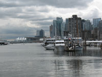

Site Visit Information
Agriculture
Facility Name: Bakerview EcoDairy
Location: Abbotsford
The Bakerview EcoDairy is the first small-scale anaerobic demonstration farm of its kind in Canada, showcasing innovative and sustainable dairy farm practices. The anaerobic digestion facility and education centre showcases a waste-to-energy project in the Agriculture Sector. It also demonstrates how innovative technology solutions can be applied to smaller scale farms. http://www.ecodairy.ca/
Municipal Solid Waste
Facility Name:
- City of Vancouver Landfill
- Harvest / Fraser Richmond Soil and Fibre - Next Generation of Composting and Anaerobic Digestion-Energy
Location: Delta / Richmond
The City of Vancouver owns and operates a municipal landfill in Delta, BC, that processes about 430,000 tons of solid waste and 120,000 tons of demolition waste annually. Maxim Power is a private operator, which is generating electricity from the landfill gas. Other innovative pilots are in development and should be running by March 2013. http://www.maximpowercorp.com/_html/operations/vancouver_landfill.html
Harvest / Fraser Richmond Soil and Fibre is a private operator with an existing composting site that will divert 27,000 tons of municipal green (food and yard) waste out of landfills and convert it to electricity using High Solids Anaerobic Digestion (HSAD) technology – a first in North America. http://www.harvestpower.com/bc/richmond/
Oil and Gas
Facility: Fortis BC Liquefied Natural Gas (LNG) Plant
Location: Mt. Hayes, Vancouver Island
The group toured Fortis BC's recently completed $200-million liquefied natural gas plant at Mt. Hayes on Vancouver Island. FortisBC completed construction on its new liquefied natural gas (LNG) storage facility in June 2011. The facility is located west of Mt. Hayes on Vancouver Island, approximately 6 km northwest of Ladysmith. The Mt. Hayes storage facility has capacity to store 1.5 billion cubic feet of liquefied natural gas.
Wastewater
Facility: Annacis Island Wastewater Treatment Plant
Location: Delta
The Annacis Wastewater Treatment Plant is the largest of Metro Vancouver's five wastewater treatment plants. The plant provides secondary treatment to wastewater from approximately 1,000,000 people in the southern and western parts of the region. The plant utilizes leading edge co-digestion technology to enhance energy-rich biogas production from organic waste such as fat, oils and grease collected from local food processers. In June 2011, the Centre was reported to be yielding 8,000 cubic metres of biogas per day and expected to boost gas production 20 per cent overall.
The Plant also includes the Annacis Wastewater Centre (AWC), the first of Metro Vancouver's planned network of Sustainability Academies, which provides top-quality laboratory facilities and industrial space for research, teaching space and access to various in-plant wastewater streams for manufacturers and suppliers of equipment to demonstrate processes and offers pilot facilities for optimizing full scale processes. The AWC also contains multi-purpose meeting rooms and a classroom providing space for public discourse, education, training and other professional services.
- http://www.metrovancouver.org/services/wastewater/treatment/
Pages/treatmentplants.aspx - http://libtechplayground.wordpress.com/2011/06/11/bc-localnews-fat-and-grease-from-slaughtered-animals-helping-generate-more-biogas-at-metro-vancouvers-annacis-island-swp/
- www.metrovancouver.org/region/academies
Municipal Solid Waste
Facility: Nanaimo Bioenergy Centre and ICC Compost and R&D Facility
Location: Nanaimo
Nanaimo Bioenergy Centre is a public-private landfill gas utilization to electricity facility. This collaboration between the Cedar Road Bioenergy Inc. and the Regional District of Nanaimo is achieving measurable, leading outcomes in commercial GHG reduction. The Centre focuses on distributed waste to energy and waste to green product conversion for small to medium sized biogas utilization opportunities. http://www.suncurrent.ca/index.php/bio-energy/cedar-road-bioenergy
ICC's waste to energy facility operates patented and proprietary technologies for conversion of organic waste into compost and heat and is pursuing research & development initiatives to produce electricity and liquid biofuels. The unique ICC Bioreaction process meets or exceeds all organics processing standards worldwide and yet is inexpensive to operate, positioning ICC as a global leader in organic waste to compost technology integration. http://www.iccgroup.ca/index.php/facility-details